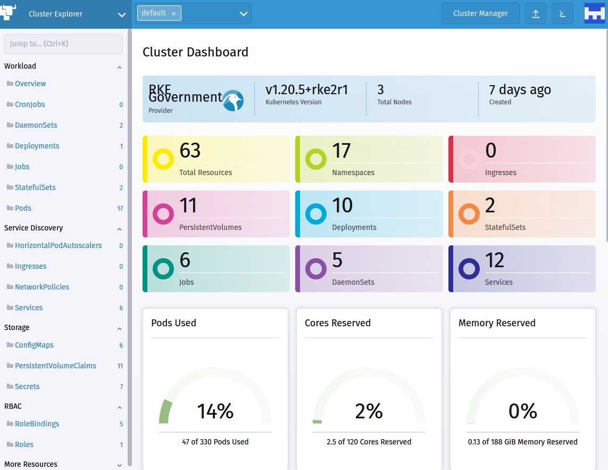
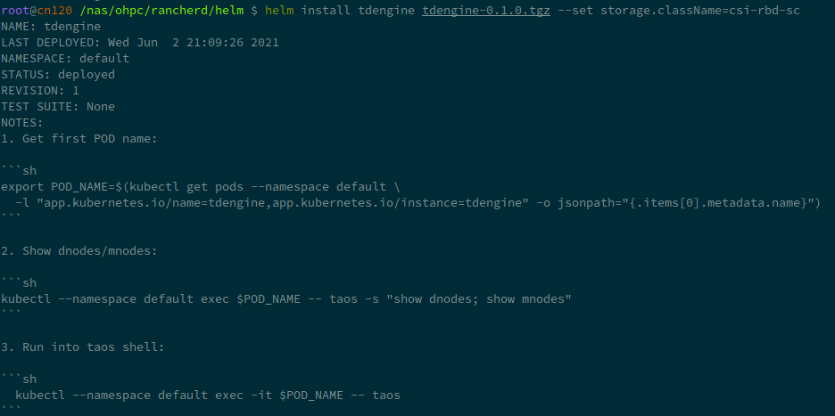
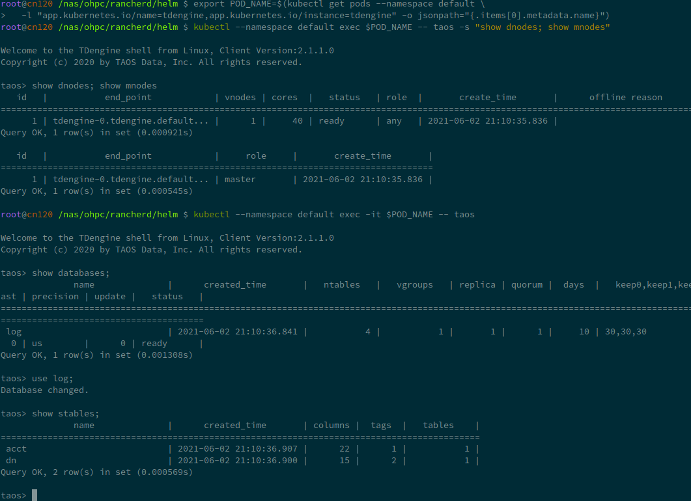

TDengine on Kubernetes
- Author: Huo Linhe lhhuo@taosdata.com
- Updated：2022-06-01 08:55:00
This document is for TDengine database deployment on Kubernetes(k8s). All the things we do is for who love TDengine and want to take it to k8s. We are hosting the documentation on taosdata/TDengine-Operator. Anyone want to help improve the documentations could edit the markdown files.
If you encounter problems following the operations, you can always add our official WeChat "tdengine" to join our chat group to get help from us and other TDengine database users.
Start with Kubernetes
We suppose you have know how kubernetes(kubectl) work and a kubernetes environment in use.
If you start from scratch, you can try kubernetes with minikube or install with rancher by following the steps in next chapter.
Try kubernetes with Minikube
This document will apply to linux host, others would go https://minikube.sigs.k8s.io/docs/start/ for more documentations.
Install
First, download and install minikube
curl -LO https://storage.googleapis.com/minikube/releases/latest/minikube-linux-amd64
sudo install minikube-linux-amd64 /usr/local/bin/minikube
Start
Start a minikube cluster
minikube start

Kubectl
In minikube, you can use kubectl like:
minikube kubectl -- get pods -A
But you can install and use kubectl as usual:
curl -LO "https://dl.k8s.io/release/$(curl -L -s https://dl.k8s.io/release/stable.txt)/bin/linux/amd64/kubectl"
sudo install kubectl /usr/local/bin/kubectl
Get pods in all namespaces:
kubectl get pods -A
Get storage class:
kubectl get sc
Note that minikube will enable default storage class standard, which you should keep in mind.
Dashboard
Minikube provde dashboard as an extension, start it with:
minikube dashboard
It will open in webbrowser:

Introduction to Kubernetes
We suppose you have know how kubernetes work and a kubernetes environment in use.
Setup K8s Cluster with Rancher
Claim: I've built this at May 26 2021 in Beijing, China(UTC+8), China. Please refer to fitted documentations if any step changed.
Install RancherD to deploy Rancher
For most of the cases, just run the rancherd installer.
curl -sfL https://get.rancher.io | sh -
Alternatively, you can download the latest rancherd package from github releases assets.
# fill the proxy url if you use one
export https_proxy=
curl -s https://api.github.com/repos/rancher/rancher/releases/latest \
|jq '.assets[] |
select(.browser_download_url|contains("rancherd-amd64.tar.gz")) |
.browser_download_url' -r \
|wget -ci -
And install it.
tar xzf rancherd-amd64.tar.gz -C /usr/local
Then start the rancherd service.
systemctl enable rancherd-server
systemctl start rancherd-server
Keep tracking with the service.
journalctl -fu rancherd-server
End with log successfully:
"Event occurred" object="cn120" kind="Node" apiVersion="v1" \
type="Normal" reason="Synced" message="Node synced successfully"
Setup kubeconfig and kubectl
Once the Kubernetes cluster is up, set up RancherD’s kubeconfig file and kubectl:
export KUBECONFIG=/etc/rancher/rke2/rke2.yaml
export PATH=$PATH:/var/lib/rancher/rke2/bin
Check rancher status with kubectl:
kubectl get daemonset rancher -n cattle-system
kubectl get pod -n cattle-system
Result:
NAME DESIRED CURRENT READY UP-TO-DATE AVAILABLE NODE SELECTOR AGE
rancher 1 1 1 1 1 node-role.kubernetes.io/master=true 36m
NAME READY STATUS RESTARTS AGE
helm-operation-5c2wd 0/2 Completed 0 34m
helm-operation-bdxlx 0/2 Completed 0 33m
helm-operation-cgcvr 0/2 Completed 0 34m
helm-operation-cj4g4 0/2 Completed 0 33m
helm-operation-hq282 0/2 Completed 0 34m
helm-operation-lp5nn 0/2 Completed 0 33m
rancher-kf592 1/1 Running 0 36m
rancher-webhook-65f558c486-vrjz9 1/1 Running 0 33m
Set Rancher Password
rancherd reset-admin
You would see like this:
INFO[0000] Server URL: https://*.*.*.*:8443
INFO[0000] Default admin and password created. Username: admin, Password: ****
Point to server url, you can see the login page.

Type right username and password, then enjoy rancher powered cluster dashboard.

HA Settings
Check the token in /var/lib/rancher/rke2/server/node-token.
Install rancherd-server in other nodes like first node:
tar xzf rancherd-amd64.tar.gz -C /usr/local
systemctl enable rancherd-server
Prepare config dir:
mkdir -p /etc/rancher/rke2
Change the config file in /etc/rancher/rke2/config.yaml.
server: https://192.168.60.120:9345
token: <the token in /var/lib/rancher/rke2/server/node-token>
Start rancherd
systemctl start rancherd-server
journalctl -fu rancherd-server
Other nodes just copy the config.yaml and start rancherd, and those will be joined to cluster automatically.
Type kubectl get daemonset rancher -n cattle-system：
NAME DESIRED CURRENT READY UP-TO-DATE AVAILABLE NODE SELECTOR AGE
rancher 3 3 3 3 3 node-role.kubernetes.io/master=true 129m
Three nodes rancher+k8s cluster are avalibale now.
Use Ceph RBD device in k8s
Refer to https://docs.ceph.com/en/latest/rbd/rbd-kubernetes/.
Create pool for k8s and initialize it.
ceph osd pool create kubernetes
rbd pool init kubernetes
Create a new user for Kubernetes and ceph-csi. Execute the following and record the generated key:
ceph auth get-or-create client.kubernetes \
mon 'profile rbd' \
osd 'profile rbd pool=kubernetes' \
mgr 'profile rbd pool=kubernetes'
Get the following token:
[client.kubernetes]
key = AQC1Oq5gnLcWGhAACiFyohnB6n6Fovd/vNbqhw==
Use ceph mon dump to get ceph cluster fsid and monitor endpoint:
fsid 6177c398-f449-4d66-a00b-27cad7cd076f
last_changed 2020-09-09T22:06:52.339219+0800
created 2018-11-15T12:12:01.363568+0800
min_mon_release 15 (octopus)
0: [v2:192.168.60.90:3300/0,v1:192.168.60.90:6789/0] mon.dn0
1: [v2:192.168.60.206:3300/0,v1:192.168.60.206:6789/0] mon.mds2
2: [v2:192.168.60.207:3300/0,v1:192.168.60.207:6789/0] mon.mds1
3: [v2:192.168.60.208:3300/0,v1:192.168.60.208:6789/0] mon.admin
4: [v2:192.168.60.209:3300/0,v1:192.168.60.209:6789/0] mon.mon2
5: [v2:192.168.60.210:3300/0,v1:192.168.60.210:6789/0] mon.mon1
Generate a csi-config-map.yaml.
---
apiVersion: v1
kind: ConfigMap
data:
config.json: |-
[{
"clusterID": "6177c398-f449-4d66-a00b-27cad7cd076f",
"monitors":[
"192.168.60.90:6789",
"192.168.60.206:6789",
"192.168.60.207:6789",
"192.168.60.208:6789",
"192.168.60.209:6789",
"192.168.60.210:6789"
}]
metadata:
name: ceph-csi-config
Add to k8s.
kubectl apply -f csi-config-map.yaml
Generate cephx csi-rbd-secret.yaml:
---
apiVersion: v1
kind: Secret
metadata:
name: csi-rbd-secret
namespace: default
stringData:
userID: kubernetes
userKey: AQC1Oq5gnLcWGhAACiFyohnB6n6Fovd/vNbqhw==
Once generated, store the new Secret object in Kubernetes:
kubectl apply -f csi-rbd-secret.yaml
Add CSI RBAC roles.
kubectl apply -f https://raw.githubusercontent.com/ceph/ceph-csi/master/deploy/rbd/kubernetes/csi-provisioner-rbac.yaml
You'll see like this:
serviceaccount/rbd-csi-provisioner created
clusterrole.rbac.authorization.k8s.io/rbd-external-provisioner-runner created
clusterrolebinding.rbac.authorization.k8s.io/rbd-csi-provisioner-role created
role.rbac.authorization.k8s.io/rbd-external-provisioner-cfg created
rolebinding.rbac.authorization.k8s.io/rbd-csi-provisioner-role-cfg created
Create nodeplugin for Ceph CSI.
kubectl apply -f https://raw.githubusercontent.com/ceph/ceph-csi/master/deploy/rbd/kubernetes/csi-nodeplugin-rbac.yaml
serviceaccount/rbd-csi-nodeplugin created
clusterrole.rbac.authorization.k8s.io/rbd-csi-nodeplugin created
clusterrolebinding.rbac.authorization.k8s.io/rbd-csi-nodeplugin created
Add Ceph RBD provisioner for k8s.
wget https://raw.githubusercontent.com/ceph/ceph-csi/master/deploy/rbd/kubernetes/csi-rbdplugin-provisioner.yaml
wget https://raw.githubusercontent.com/ceph/ceph-csi/master/deploy/rbd/kubernetes/csi-rbdplugin.yaml
# I'm changing this for network problem.
sed -i 's#k8s.gcr.io/sig-storage#lvcisco#' csi-rbdplugin*.yaml
kubectl apply -f csi-rbdplugin-provisioner.yaml
kubectl apply -f csi-rbdplugin.yaml
Result:
service/csi-rbdplugin-provisioner created
deployment.apps/csi-rbdplugin-provisioner created
daemonset.apps/csi-rbdplugin unchanged
service/csi-metrics-rbdplugin unchanged
Add ceph-csi-encryption-kms-config config map, or it will cause error(See here).
---
apiVersion: v1
kind: ConfigMap
data:
config.json: |-
{
"vault-test": {
"encryptionKMSType": "vault",
"vaultAddress": "http://vault.default.svc.cluster.local:8200",
"vaultAuthPath": "/v1/auth/kubernetes/login",
"vaultRole": "csi-kubernetes",
"vaultPassphraseRoot": "/v1/secret",
"vaultPassphrasePath": "ceph-csi/",
"vaultCAVerify": "false"
},
"vault-tokens-test": {
"encryptionKMSType": "vaulttokens",
"vaultAddress": "http://vault.default.svc.cluster.local:8200",
"vaultBackendPath": "secret/",
"vaultTLSServerName": "vault.default.svc.cluster.local",
"vaultCAVerify": "false",
"tenantConfigName": "ceph-csi-kms-config",
"tenantTokenName": "ceph-csi-kms-token",
"tenants": {
"my-app": {
"vaultAddress": "https://vault.example.com",
"vaultCAVerify": "true"
},
"an-other-app": {
"tenantTokenName": "storage-encryption-token"
}
}
}
}
metadata:
name: ceph-csi-encryption-kms-config
Apply it:
kubectl apply -f kms-config.yaml
Create K8s StorageClass
cat <<EOF > csi-rbd-sc.yaml
---
apiVersion: storage.k8s.io/v1
kind: StorageClass
metadata:
name: csi-rbd-sc
provisioner: rbd.csi.ceph.com
parameters:
clusterID: 6177c398-f449-4d66-a00b-27cad7cd076f
pool: kubernetes
imageFeatures: layering
csi.storage.k8s.io/provisioner-secret-name: csi-rbd-secret
csi.storage.k8s.io/provisioner-secret-namespace: default
csi.storage.k8s.io/controller-expand-secret-name: csi-rbd-secret
csi.storage.k8s.io/controller-expand-secret-namespace: default
csi.storage.k8s.io/node-stage-secret-name: csi-rbd-secret
csi.storage.k8s.io/node-stage-secret-namespace: default
reclaimPolicy: Delete
allowVolumeExpansion: true
mountOptions:
- discard
EOF
kubectl apply -f csi-rbd-sc.yaml
Create A PersistentVolumeClaim(PVC)
There's two kind of PVC volume mode: raw block or filesystem.
Raw RBD block device PVC
cat <<EOF > raw-block-pvc.yaml
---
apiVersion: v1
kind: PersistentVolumeClaim
metadata:
name: raw-block-pvc
spec:
accessModes:
- ReadWriteOnce
volumeMode: Block
resources:
requests:
storage: 1Gi
storageClassName: csi-rbd-sc
EOF
kubectl apply -f raw-block-pvc.yaml
cat <<EOF > raw-block-pod.yaml
---
apiVersion: v1
kind: Pod
metadata:
name: pod-with-raw-block-volume
spec:
containers:
- name: fc-container
image: fedora:26
command: ["/bin/sh", "-c"]
args: ["tail -f /dev/null"]
volumeDevices:
- name: data
devicePath: /dev/xvda
volumes:
- name: data
persistentVolumeClaim:
claimName: raw-block-pvc
EOF
kubectl apply -f raw-block-pod.yaml
If k8s.gcr.io is not reachable, you should use another image provider for csi-* images.
pull-and-tag() {
docker pull $1
docker tag $1 $2
}
pull-and-tag lvcisco/csi-provisioner:v2.0.4 k8s.gcr.io/sig-storage/csi-provisioner:v2.0.4
pull-and-tag lvcisco/csi-attacher:v3.0.2 k8s.gcr.io/sig-storage/csi-attacher:v3.0.2
pull-and-tag lvcisco/csi-snapshotter:v4.0.0 k8s.gcr.io/sig-storage/csi-snapshotter:v4.0.0
pull-and-tag lvcisco/csi-node-driver-registrar:v2.0.1 k8s.gcr.io/sig-storage/csi-node-driver-registrar:v2.0.1
pull-and-tag lvcisco/csi-resizer:v1.0.1 k8s.gcr.io/sig-storage/csi-resizer:v1.0.1
Filesystem PVC
This's the more common use case.
cat <<EOF > pvc.yaml
---
apiVersion: v1
kind: PersistentVolumeClaim
metadata:
name: rbd-pvc
spec:
accessModes:
- ReadWriteOnce
volumeMode: Filesystem
resources:
requests:
storage: 1Gi
storageClassName: csi-rbd-sc
EOF
kubectl apply -f pvc.yaml
cat <<EOF > pod.yaml
---
apiVersion: v1
kind: Pod
metadata:
name: csi-rbd-demo-pod
spec:
containers:
- name: web-server
image: nginx
volumeMounts:
- name: nginx-test
mountPath: /usr/share/nginx/html
volumes:
- name: nginx-test
persistentVolumeClaim:
claimName: rbd-pvc
readOnly: false
EOF
kubectl apply -f pod.yaml
K8s Starter
Let's start using kubernetes from some starter project. If you are familiar enough with k8s, just ignore the chapter and go on.
StatefulSets
In starter/stateful-nginx.yaml:
apiVersion: v1
kind: Service
metadata:
name: nginx
labels:
app: nginx
spec:
ports:
- port: 80
name: web
clusterIP: None
selector:
app: nginx
---
apiVersion: apps/v1
kind: StatefulSet
metadata:
name: web
spec:
selector:
matchLabels:
app: nginx # has to match .spec.template.metadata.labels
serviceName: "nginx"
replicas: 3 # by default is 1
template:
metadata:
labels:
app: nginx # has to match .spec.selector.matchLabels
spec:
terminationGracePeriodSeconds: 10
containers:
- name: nginx
image: nginx
ports:
- containerPort: 80
name: web
volumeMounts:
- name: www
mountPath: /usr/share/nginx/html
volumeClaimTemplates:
- metadata:
name: www
spec:
accessModes: [ "ReadWriteOnce" ]
storageClassName: "csi-rbd-sc"
resources:
requests:
storage: 1Gi
kubectl apply -f starter/stateful-nginx.yaml
ConfigMap Mount as Volume
A config map:
---
apiVersion: v1
kind: ConfigMap
metadata:
name: starter-config-map
data:
debugFlag: 135
keep: 3650
---
apiVersion: v1
kind: Pod
metadata:
name: starter-config-map-as-volume
spec:
containers:
- name: test-container
image: busybox
command: [ "/bin/sh", "-c", "ls /etc/config/" ]
volumeMounts:
- name: starter-config-map-vol
mountPath: /etc/config
volumes:
- name: starter-config-map-vol
configMap:
# Provide the name of the ConfigMap containing the files you want
# to add to the container
name: starter-config-map
restartPolicy: Never
Setup TDengine Cluster on Kubernetes
Setup TDengine Cluster on Kubernetes
Create a config map for TDengine: taoscfg.yaml.
---
apiVersion: v1
kind: ConfigMap
metadata:
name: taoscfg
labels:
app: tdengine
data:
CLUSTER: "1"
TAOS_KEEP: "3650"
TAOS_DEBUG_FLAG: "135"
Service config taosd-service.yaml for each port we will use, here note that the metadata.name (setted as "taosd") will be used in next step:
---
apiVersion: v1
kind: Service
metadata:
name: "taosd"
labels:
app: "tdengine"
spec:
ports:
- name: tcp6030
protocol: "TCP"
port: 6030
- name: tcp6035
protocol: "TCP"
port: 6035
- name: tcp6041
protocol: "TCP"
port: 6041
- name: udp6030
protocol: "UDP"
port: 6030
- name: udp6031
protocol: "UDP"
port: 6031
- name: udp6032
protocol: "UDP"
port: 6032
- name: udp6033
protocol: "UDP"
port: 6033
- name: udp6034
protocol: "UDP"
port: 6034
- name: udp6035
protocol: "UDP"
port: 6035
- name: udp6036
protocol: "UDP"
port: 6036
- name: udp6037
protocol: "UDP"
port: 6037
- name: udp6038
protocol: "UDP"
port: 6038
- name: udp6039
protocol: "UDP"
port: 6039
- name: udp6040
protocol: "UDP"
port: 6040
selector:
app: "tdengine"
We use StatefulSet config tdengine.yaml for TDengine.
---
apiVersion: apps/v1
kind: StatefulSet
metadata:
name: "tdengine"
labels:
app: "tdengine"
spec:
serviceName: "taosd"
replicas: 2
updateStrategy:
type: RollingUpdate
selector:
matchLabels:
app: "tdengine"
template:
metadata:
name: "tdengine"
labels:
app: "tdengine"
spec:
containers:
- name: "tdengine"
image: "zitsen/taosd:develop"
imagePullPolicy: "Always"
envFrom:
- configMapRef:
name: taoscfg
ports:
- name: tcp6030
protocol: "TCP"
containerPort: 6030
- name: tcp6035
protocol: "TCP"
containerPort: 6035
- name: tcp6041
protocol: "TCP"
containerPort: 6041
- name: udp6030
protocol: "UDP"
containerPort: 6030
- name: udp6031
protocol: "UDP"
containerPort: 6031
- name: udp6032
protocol: "UDP"
containerPort: 6032
- name: udp6033
protocol: "UDP"
containerPort: 6033
- name: udp6034
protocol: "UDP"
containerPort: 6034
- name: udp6035
protocol: "UDP"
containerPort: 6035
- name: udp6036
protocol: "UDP"
containerPort: 6036
- name: udp6037
protocol: "UDP"
containerPort: 6037
- name: udp6038
protocol: "UDP"
containerPort: 6038
- name: udp6039
protocol: "UDP"
containerPort: 6039
- name: udp6040
protocol: "UDP"
containerPort: 6040
env:
# POD_NAME for FQDN config
- name: POD_NAME
valueFrom:
fieldRef:
fieldPath: metadata.name
# SERVICE_NAME and NAMESPACE for fqdn resolve
- name: SERVICE_NAME
value: "taosd"
- name: STS_NAME
value: "tdengine"
- name: STS_NAMESPACE
valueFrom:
fieldRef:
fieldPath: metadata.namespace
# TZ for timezone settings, we recommend to always set it.
- name: TZ
value: "Asia/Shanghai"
# TAOS_ prefix will configured in taos.cfg, strip prefix and camelCase.
- name: TAOS_SERVER_PORT
value: "6030"
# Must set if you want a cluster.
- name: TAOS_FIRST_EP
value: "$(STS_NAME)-0.$(SERVICE_NAME).$(STS_NAMESPACE).svc.cluster.local:$(TAOS_SERVER_PORT)"
# TAOS_FQND should always be setted in k8s env.
- name: TAOS_FQDN
value: "$(POD_NAME).$(SERVICE_NAME).$(STS_NAMESPACE).svc.cluster.local"
volumeMounts:
- name: taosdata
mountPath: /var/lib/taos
readinessProbe:
exec:
command:
- taos
- -s
- "show mnodes"
initialDelaySeconds: 5
timeoutSeconds: 5000
livenessProbe:
tcpSocket:
port: 6030
initialDelaySeconds: 15
periodSeconds: 20
volumeClaimTemplates:
- metadata:
name: taosdata
spec:
accessModes:
- "ReadWriteOnce"
storageClassName: "csi-rbd-sc"
resources:
requests:
storage: "10Gi"
Add them to kubernetes.
kubectl apply -f taoscfg.yaml
kubectl apply -f taosd-service.yaml
kubectl apply -f tdengine.yaml
The script will create a two node TDengine cluster on k8s.
Execute show dnodes in taos shell:
kubectl exec -i -t tdengine-0 -- taos -s "show dnodes"
kubectl exec -i -t tdengine-1 -- taos -s "show dnodes"
Well, the current dnodes list shows:
Welcome to the TDengine shell from Linux, Client Version:2.1.1.0
Copyright (c) 2020 by TAOS Data, Inc. All rights reserved.
taos> show dnodes
id | end_point | vnodes | cores | status | role | create_time | offline reason |
======================================================================================================================================
1 | tdengine-0.taosd.default.sv... | 1 | 40 | ready | any | 2021-06-01 17:13:24.181 | |
2 | tdengine-1.taosd.default.sv... | 0 | 40 | ready | any | 2021-06-01 17:14:09.257 | |
Query OK, 2 row(s) in set (0.000997s)
Scale Up
TDengine on Kubernetes could automatically scale up with:
kubectl scale statefulsets tdengine --replicas=4
Check if scale-up works:
kubectl get pods -l app=tdengine
Results:
NAME READY STATUS RESTARTS AGE
tdengine-0 1/1 Running 0 161m
tdengine-1 1/1 Running 0 161m
tdengine-2 1/1 Running 0 32m
tdengine-3 1/1 Running 0 32m
Check TDengine dnodes:
kubectl exec -i -t tdengine-0 -- taos -s "show dnodes"
Results:
Welcome to the TDengine shell from Linux, Client Version:2.1.1.0
Copyright (c) 2020 by TAOS Data, Inc. All rights reserved.
taos> show dnodes
id | end_point | vnodes | cores | status | role | create_time | offline reason |
======================================================================================================================================
1 | tdengine-0.taosd.default.sv... | 0 | 40 | ready | any | 2021-06-01 11:58:12.915 | |
2 | tdengine-1.taosd.default.sv... | 0 | 40 | ready | any | 2021-06-01 11:58:33.127 | |
3 | tdengine-2.taosd.default.sv... | 0 | 40 | ready | any | 2021-06-01 14:07:27.078 | |
4 | tdengine-3.taosd.default.sv... | 1 | 40 | ready | any | 2021-06-01 14:07:48.362 | |
Query OK, 4 row(s) in set (0.001293s)
Scale Down
Let's try scale down from 3 to 2.
First, we scale up the TDengine cluster to 3 nodes:
kubectl scale statefulsets tdengine --replicas=3
show dnodes in taos shell:
taos> show dnodes
id | end_point | vnodes | cores | status | role | create_time | offline reason |
======================================================================================================================================
1 | tdengine-0.taosd.default.sv... | 1 | 40 | ready | any | 2021-06-01 16:27:24.852 | |
2 | tdengine-1.taosd.default.sv... | 0 | 40 | ready | any | 2021-06-01 16:27:53.339 | |
3 | tdengine-2.taosd.default.sv... | 0 | 40 | ready | any | 2021-06-01 16:28:49.787 | |
Query OK, 3 row(s) in set (0.001101s)
To perform a right scale-down, we should drop the last dnode in taos shell first:
kubectl exec -i -t tdengine-0 -- taos -s "drop dnode 'tdengine-2.taosd.default.svc.cluster.local:6030'"
Then scale down to 2.
kubectl scale statefulsets tdengine --replicas=2
Extra relicas pods will be teminated, and retain 2 pods.
Type kubectl get pods -l app=tdengine to check pods.
NAME READY STATUS RESTARTS AGE
tdengine-0 1/1 Running 0 3h40m
tdengine-1 1/1 Running 0 3h40m
Also need to remove the pvc(if no, scale-up will be failed next):
kubectl delete pvc taosdata-tdengine-2
Now your TDengine cluster is safe.
Scale up again will be ok:
kubectl scale statefulsets tdengine --replicas=3
show dnodes results:
taos> show dnodes
id | end_point | vnodes | cores | status | role | create_time | offline reason |
======================================================================================================================================
1 | tdengine-0.taosd.default.sv... | 1 | 40 | ready | any | 2021-06-01 16:27:24.852 | |
2 | tdengine-1.taosd.default.sv... | 0 | 40 | ready | any | 2021-06-01 16:27:53.339 | |
4 | tdengine-2.taosd.default.sv... | 0 | 40 | ready | any | 2021-06-01 16:40:49.177 | |
Let's do something BAD Case 1
Scale it up to 4 and then scale down to 2 directly. Deleted pods are offline now:
Welcome to the TDengine shell from Linux, Client Version:2.1.1.0
Copyright (c) 2020 by TAOS Data, Inc. All rights reserved.
taos> show dnodes
id | end_point | vnodes | cores | status | role | create_time | offline reason |
======================================================================================================================================
1 | tdengine-0.taosd.default.sv... | 0 | 40 | ready | any | 2021-06-01 11:58:12.915 | |
2 | tdengine-1.taosd.default.sv... | 0 | 40 | ready | any | 2021-06-01 11:58:33.127 | |
3 | tdengine-2.taosd.default.sv... | 0 | 40 | offline | any | 2021-06-01 14:07:27.078 | status msg timeout |
4 | tdengine-3.taosd.default.sv... | 1 | 40 | offline | any | 2021-06-01 14:07:48.362 | status msg timeout |
Query OK, 4 row(s) in set (0.001236s)
But we can't drop tje offline dnodes, the dnode will stuck in dropping mode (if you call drop dnode 'fqdn:6030').
Let's do something BAD Case 2
Note that if the remaining dnodes is less than the database replica, it will cause error untill you scale it up again.
Create database with replica 2, and insert data to an table:
kubectl exec -i -t tdengine-0 -- \
taos -s \
"create database if not exists test replica 2;
use test;
create table if not exists t1(ts timestamp, n int);
insert into t1 values(now, 1)(now+1s, 2);"
Scale down to replica 1 (bad behavior):
kubectl scale statefulsets tdengine --replicas=1
Now in taos shell, all operations with database test are not valid even if you call drop dnode after scale down.
taos> show dnodes;
id | end_point | vnodes | cores | status | role | create_time | offline reason |
======================================================================================================================================
1 | tdengine-0.taosd.default.sv... | 2 | 40 | ready | any | 2021-06-01 15:55:52.562 | |
2 | tdengine-1.taosd.default.sv... | 1 | 40 | offline | any | 2021-06-01 15:56:07.212 | status msg timeout |
Query OK, 2 row(s) in set (0.000845s)
taos> show dnodes;
id | end_point | vnodes | cores | status | role | create_time | offline reason |
======================================================================================================================================
1 | tdengine-0.taosd.default.sv... | 2 | 40 | ready | any | 2021-06-01 15:55:52.562 | |
2 | tdengine-1.taosd.default.sv... | 1 | 40 | offline | any | 2021-06-01 15:56:07.212 | status msg timeout |
Query OK, 2 row(s) in set (0.000837s)
taos> use test;
Database changed.
taos> insert into t1 values(now, 3);
DB error: Unable to resolve FQDN (0.013874s)
So, before scale-down, please check the max value of replica among all databases, and be sure to do drop dnode step.
Clean Up TDengine StatefulSet
To complete remove tdengine statefulset, type:
kubectl delete statefulset -l app=tdengine
kubectl delete svc -l app=tdengine
kubectl delete pvc -l app=tdengine
kubectl delete configmap taoscfg
Setup TDengine Cluster with helm
Is it simple enough? Let's do something more.
Install Helm
curl -fsSL -o get_helm.sh \
https://raw.githubusercontent.com/helm/helm/master/scripts/get-helm-3
chmod +x get_helm.sh
./get_helm.sh
Helm will use kubectl and the kubeconfig setted in chapter 1.
Install TDengine Chart
Download TDengine chart.
wget https://github.com/taosdata/TDengine-Operator/raw/main/helm/tdengine-0.3.0.tgz
First, check your sotrage class name:
helm get storageclass
In minikube, the default storageclass name is standard.
And then deploy TDengine in one line:
helm install tdengine tdengine-0.3.0.tgz \
--set storage.className=<your storage class name>
If you are using minikube, you may want a smaller storage size for TDengine:
helm install tdengine tdengine-0.3.0.tgz \
--set storage.className=standard \
--set storage.dataSize=2Gi \
--set storage.logSize=10Mi
If success, it will show an minimal usage of TDengine.
export POD_NAME=$(kubectl get pods --namespace default \
-l "app.kubernetes.io/name=tdengine,app.kubernetes.io/instance=tdengine" \
-o jsonpath="{.items[0].metadata.name}")
kubectl --namespace default exec $POD_NAME -- taos -s "show dnodes; show mnodes"
kubectl --namespace default exec -it $POD_NAME -- taos

You can try it by yourself:

For a small sql test:
kubectl --namespace default exec $POD_NAME -- \
taos -s "create database test;
use test;
create table t1 (ts timestamp, n int);
insert into t1 values(now, 1)(now + 1s, 2);
select * from t1;"

Values
TDengine support values.yaml append.
To see a full list of values, use helm show values:
helm show values tdengine-0.3.0.tgz
You cound save it to values.yaml, and do some changs on it, like replica count, storage class name, and so on. Then type:
helm install tdengine tdengine-0.3.0.tgz -f values.yaml
The full list of values:
# Default values for tdengine.
# This is a YAML-formatted file.
# Declare variables to be passed into helm templates.
replicaCount: 1
image:
prefix: tdengine/tdengine
#pullPolicy: Always
# Overrides the image tag whose default is the chart appVersion.
#tag: "2.4.0.5"
service:
# ClusterIP is the default service type, use NodeIP only if you know what you are doing.
type: ClusterIP
ports:
# TCP range required
tcp: [6030,6031,6032,6033,6034, 6035,6036,6037,6038, 6039, 6040, 6041, 6042, 6043, 6044, 6045, 6060]
# UDP range 6030-6039
udp: [6030, 6031, 6032, 6033, 6034, 6035, 6036, 6037, 6038, 6039]
arbitrator: true
# Set timezone here, not in taoscfg
timezone: "Asia/Shanghai"
resources:
# We usually recommend not to specify default resources and to leave this as a conscious
# choice for the user. This also increases chances charts run on environments with little
# resources, such as Minikube. If you do want to specify resources, uncomment the following
# lines, adjust them as necessary, and remove the curly braces after 'resources:'.
# limits:
# cpu: 100m
# memory: 128Mi
# requests:
# cpu: 100m
# memory: 128Mi
storage:
# Set storageClassName for pvc. K8s use default storage class if not set.
#
className: ""
dataSize: "100Gi"
logSize: "10Gi"
nodeSelectors:
taosd:
# node selectors
clusterDomainSuffix: ""
# Config settings in taos.cfg file.
#
# The helm/k8s support will use environment variables for taos.cfg,
# converting an upper-snake-cased variable like `TAOS_DEBUG_FLAG`,
# to a camelCase taos config variable `debugFlag`.
#
# See the variable list at https://www.taosdata.com/cn/documentation/administrator .
#
# Note:
# 1. firstEp/secondEp: should not be setted here, it's auto generated at scale-up.
# 2. serverPort: should not be setted, we'll use the default 6030 in many places.
# 3. fqdn: will be auto generated in kubenetes, user should not care about it.
# 4. role: currently role is not supported - every node is able to be mnode and vnode.
#
# Btw, keep quotes "" around the value like below, even the value will be number or not.
taoscfg:
# number of replications, for cluster only
TAOS_REPLICA: "1"
# number of management nodes in the system
TAOS_NUM_OF_MNODES: "1"
# number of days per DB file
# TAOS_DAYS: "10"
# number of days to keep DB file, default is 10 years.
#TAOS_KEEP: "3650"
# cache block size (Mbyte)
#TAOS_CACHE: "16"
# number of cache blocks per vnode
#TAOS_BLOCKS: "6"
# minimum rows of records in file block
#TAOS_MIN_ROWS: "100"
# maximum rows of records in file block
#TAOS_MAX_ROWS: "4096"
#
# TAOS_NUM_OF_THREADS_PER_CORE: number of threads per CPU core
#TAOS_NUM_OF_THREADS_PER_CORE: "1.0"
#
# TAOS_NUM_OF_COMMIT_THREADS: number of threads to commit cache data
#TAOS_NUM_OF_COMMIT_THREADS: "4"
#
# TAOS_RATIO_OF_QUERY_CORES:
# the proportion of total CPU cores available for query processing
# 2.0: the query threads will be set to double of the CPU cores.
# 1.0: all CPU cores are available for query processing [default].
# 0.5: only half of the CPU cores are available for query.
# 0.0: only one core available.
#TAOS_RATIO_OF_QUERY_CORES: "1.0"
#
# TAOS_KEEP_COLUMN_NAME:
# the last_row/first/last aggregator will not change the original column name in the result fields
#TAOS_KEEP_COLUMN_NAME: "0"
# enable/disable backuping vnode directory when removing vnode
#TAOS_VNODE_BAK: "1"
# enable/disable installation / usage report
#TAOS_TELEMETRY_REPORTING: "1"
# enable/disable load balancing
#TAOS_BALANCE: "1"
# max timer control blocks
#TAOS_MAX_TMR_CTRL: "512"
# time interval of system monitor, seconds
#TAOS_MONITOR_INTERVAL: "30"
# number of seconds allowed for a dnode to be offline, for cluster only
#TAOS_OFFLINE_THRESHOLD: "8640000"
# RPC re-try timer, millisecond
#TAOS_RPC_TIMER: "1000"
# RPC maximum time for ack, seconds.
#TAOS_RPC_MAX_TIME: "600"
# time interval of dnode status reporting to mnode, seconds, for cluster only
#TAOS_STATUS_INTERVAL: "1"
# time interval of heart beat from shell to dnode, seconds
#TAOS_SHELL_ACTIVITY_TIMER: "3"
# minimum sliding window time, milli-second
#TAOS_MIN_SLIDING_TIME: "10"
# minimum time window, milli-second
#TAOS_MIN_INTERVAL_TIME: "10"
# maximum delay before launching a stream computation, milli-second
#TAOS_MAX_STREAM_COMP_DELAY: "20000"
# maximum delay before launching a stream computation for the first time, milli-second
#TAOS_MAX_FIRST_STREAM_COMP_DELAY: "10000"
# retry delay when a stream computation fails, milli-second
#TAOS_RETRY_STREAM_COMP_DELAY: "10"
# the delayed time for launching a stream computation, from 0.1(default, 10% of whole computing time window) to 0.9
#TAOS_STREAM_COMP_DELAY_RATIO: "0.1"
# max number of vgroups per db, 0 means configured automatically
#TAOS_MAX_VGROUPS_PER_DB: "0"
# max number of tables per vnode
#TAOS_MAX_TABLES_PER_VNODE: "1000000"
# the number of acknowledgments required for successful data writing
#TAOS_QUORUM: "1"
# enable/disable compression
#TAOS_COMP: "2"
# write ahead log (WAL) level, 0: no wal; 1: write wal, but no fysnc; 2: write wal, and call fsync
#TAOS_WAL_LEVEL: "1"
# if walLevel is set to 2, the cycle of fsync being executed, if set to 0, fsync is called right away
#TAOS_FSYNC: "3000"
# the compressed rpc message, option:
# -1 (no compression)
# 0 (all message compressed),
# > 0 (rpc message body which larger than this value will be compressed)
#TAOS_COMPRESS_MSG_SIZE: "-1"
# max length of an SQL
#TAOS_MAX_SQL_LENGTH: "1048576"
# the maximum number of records allowed for super table time sorting
#TAOS_MAX_NUM_OF_ORDERED_RES: "100000"
# max number of connections allowed in dnode
#TAOS_MAX_SHELL_CONNS: "5000"
# max number of connections allowed in client
#TAOS_MAX_CONNECTIONS: "5000"
# stop writing logs when the disk size of the log folder is less than this value
#TAOS_MINIMAL_LOG_DIR_G_B: "0.1"
# stop writing temporary files when the disk size of the tmp folder is less than this value
#TAOS_MINIMAL_TMP_DIR_G_B: "0.1"
# if disk free space is less than this value, taosd service exit directly within startup process
#TAOS_MINIMAL_DATA_DIR_G_B: "0.1"
# One mnode is equal to the number of vnode consumed
#TAOS_MNODE_EQUAL_VNODE_NUM: "4"
# enbale/disable http service
#TAOS_HTTP: "1"
# enable/disable system monitor
#TAOS_MONITOR: "1"
# enable/disable recording the SQL statements via restful interface
#TAOS_HTTP_ENABLE_RECORD_SQL: "0"
# number of threads used to process http requests
#TAOS_HTTP_MAX_THREADS: "2"
# maximum number of rows returned by the restful interface
#TAOS_RESTFUL_ROW_LIMIT: "10240"
# The following parameter is used to limit the maximum number of lines in log files.
# max number of lines per log filters
# numOfLogLines 10000000
# enable/disable async log
#TAOS_ASYNC_LOG: "0"
#
# time of keeping log files, days
#TAOS_LOG_KEEP_DAYS: "0"
# The following parameters are used for debug purpose only.
# debugFlag 8 bits mask: FILE-SCREEN-UNUSED-HeartBeat-DUMP-TRACE_WARN-ERROR
# 131: output warning and error
# 135: output debug, warning and error
# 143: output trace, debug, warning and error to log
# 199: output debug, warning and error to both screen and file
# 207: output trace, debug, warning and error to both screen and file
#
# debug flag for all log type, take effect when non-zero value\
#TAOS_DEBUG_FLAG: "143"
# enable/disable recording the SQL in taos client
#TAOS_ENABLE_RECORD_SQL: "0"
# generate core file when service crash
#TAOS_ENABLE_CORE_FILE: "1"
# maximum display width of binary and nchar fields in the shell. The parts exceeding this limit will be hidden
#TAOS_MAX_BINARY_DISPLAY_WIDTH: "30"
# enable/disable stream (continuous query)
#TAOS_STREAM: "1"
# in retrieve blocking model, only in 50% query threads will be used in query processing in dnode
#TAOS_RETRIEVE_BLOCKING_MODEL: "0"
# the maximum allowed query buffer size in MB during query processing for each data node
# -1 no limit (default)
# 0 no query allowed, queries are disabled
#TAOS_QUERY_BUFFER_SIZE: "-1"
Scale Up
You could see the details in chapter 4.
First, we should get the statefulset name in your deploy:
export STS_NAME=$(kubectl get statefulset \
-l "app.kubernetes.io/name=tdengine" \
-o jsonpath="{.items[0].metadata.name}")
Scale up is very simple, the next line scale up the TDengine dnodes to 3, no other commands required.
kubectl scale --replicas 3 statefulset/$STS_NAME
Re-call show dnodes show mnodes to check:

Scale Down
NOTE: scale-down is not completely work as expected, use it with caution.
Also, scale down requires some extra step:
Get the dnode endpoint and drop it iteratively:
kubectl --namespace default exec $POD_NAME -- \
cat /var/lib/taos/dnode/dnodeEps.json \
| jq '.dnodeInfos[1:] |map(.dnodeFqdn + ":" + (.dnodePort|tostring)) | .[]' -r
kubectl --namespace default exec $POD_NAME -- taos -s "show dnodes"
kubectl --namespace default exec $POD_NAME -- taos -s 'drop dnode "<you dnode in list>"'
Drop one dnode may cause several seconds or minutes.

Uninstall
helm uninstall tdengine
Helm doest not automatically drop pvc by now, you can drop it manually.